'data.frame': 2651 obs. of 2 variables:
$ FechaTiempo: chr "2022-03-01" "2022-02-28" "2022-02-27" "2022-02-26" ...
$ Valor : num 43185 43179 37713 39147 39232 ...
Data$FechaTiempo <-as.Date(Data$FechaTiempo)# procesamiento de los datosBitcoin <- Data %>%filter(FechaTiempo >=as.Date("2017-01-01"), FechaTiempo <=as.Date("2021-12-31"))str(Bitcoin)
'data.frame': 1826 obs. of 2 variables:
$ FechaTiempo: Date, format: "2021-12-31" "2021-12-30" ...
$ Valor : num 46214 47151 46483 47543 50718 ...
1.0.1 Probando xts
# objeto serie de tiempoData_xts <- xts::xts(Bitcoin$Valor, order.by = Bitcoin$FechaTiempo)head(Data_xts)
Vemos que se sugiere el valor \(\lambda = 0\) lo cual dada de transformación de Box-Cox se usa la función logaritmo natural para la estabilización de la variabilidad así tenemos que:
Vemos que la sugerencia es \(\lambda = 0.9\) lo cual es cercano a \(1\), además el IC de confianza captura al \(1\), por ende la transformación logarítmica parece haber estabilizado la varianza.
#Gráfico de ellas juntaspar(mfrow=c(2,1))plot(Data_xts, main ="Series original")plot(lData_xts, main ="Series transformada")
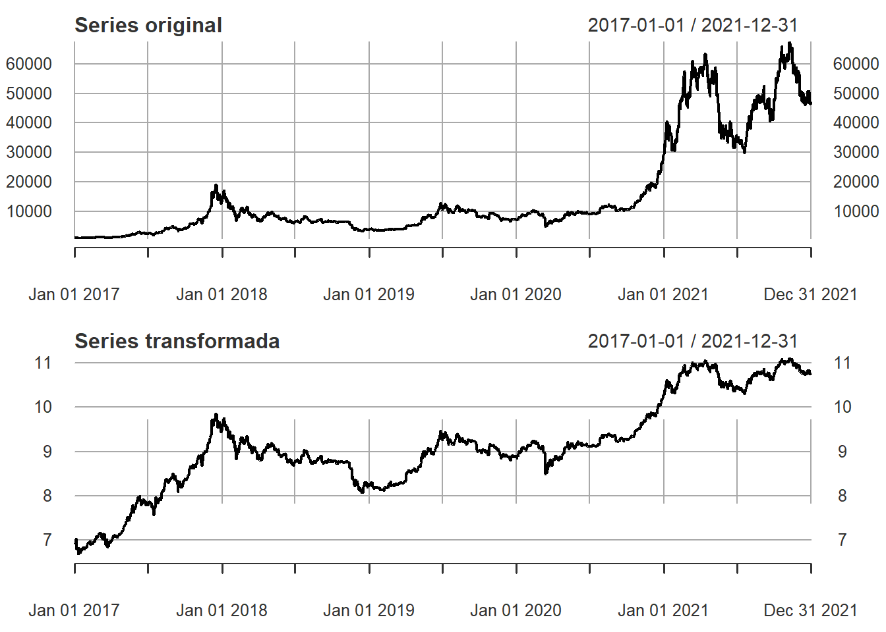
Se puede ver cómo la transformación aplicada logra estabilizar la varianza en gran medida.
1.0.3 Análisis de tendencia
Trabajaremos con la serie a la cuál se le realizo la transformación para estabilizar la varianza, realizaremos el gráfico de los valores de la función de auto-correlación
#ACfacf(lData_xts, 180, main ="Serie Bitcoin Trasnformada")
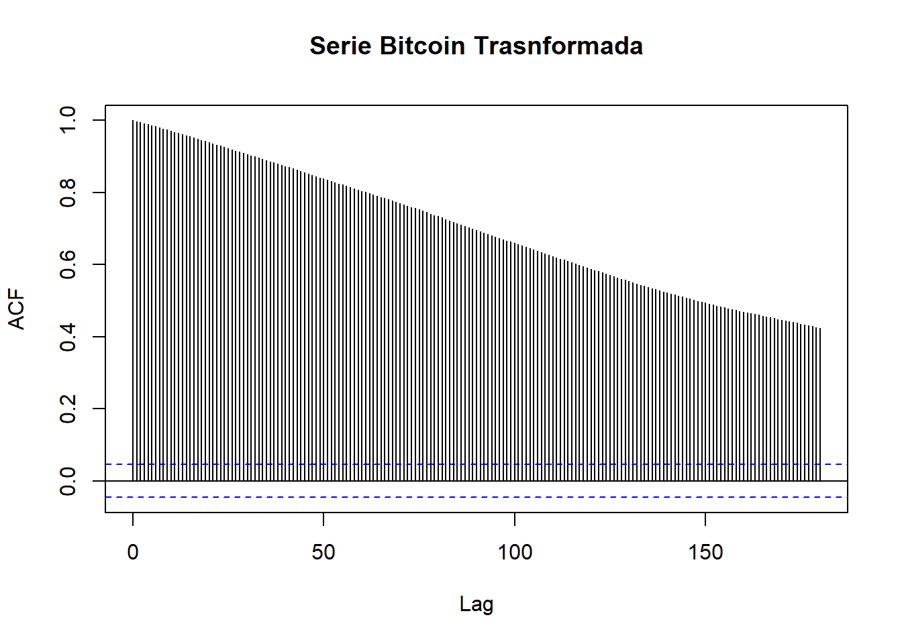
Notamos que los valores van teniendo un decaimiento leve lo cual nos da un indicio más claro de que existe tendencia en la serie, analizaremos el gráfico de retardos de la serie trasnformada para ver si podemos tener indicios de una relación no-lineal o lineal en la serie.
Vemos que se nota un fuerte relación linea hasta para el retraso número 16, por lo tanto con lo mostrado por el acf y el gráfico de retardos tenemos indicios fuertes de tendencia en la serie así usaremos los métodos: lineal determinista, Descomposición depromedios móviles y descomposición STL para estimar dicha componente.
1.0.3.1 Lineal determinista
ajustaremos el modelo eliminaremos la tendencia y analizaremos los resultados
#pasar a ts para Graficarloldata_ts <- TSstudio::xts_to_ts(lData_xts,frequency =365,start =as.Date("2017-01-01"))#modelo linealsummary(fit <-lm(ldata_ts~time(ldata_ts), na.action=NULL))
Call:
lm(formula = ldata_ts ~ time(ldata_ts), na.action = NULL)
Residuals:
Min 1Q Median 3Q Max
-1.06366 -0.49265 0.01902 0.36341 1.68667
Coefficients:
Estimate Std. Error t value Pr(>|t|)
(Intercept) -1.230e+03 1.780e+01 -69.10 <2e-16 ***
time(ldata_ts) 6.135e-01 8.813e-03 69.61 <2e-16 ***
---
Signif. codes: 0 '***' 0.001 '**' 0.01 '*' 0.05 '.' 0.1 ' ' 1
Residual standard error: 0.5439 on 1824 degrees of freedom
Multiple R-squared: 0.7265, Adjusted R-squared: 0.7264
F-statistic: 4846 on 1 and 1824 DF, p-value: < 2.2e-16
# Gráficoplot(ldata_ts, ylab="Valor en escala logarítmica")abline(fit,col ="red")# Se añade la recta ajusta
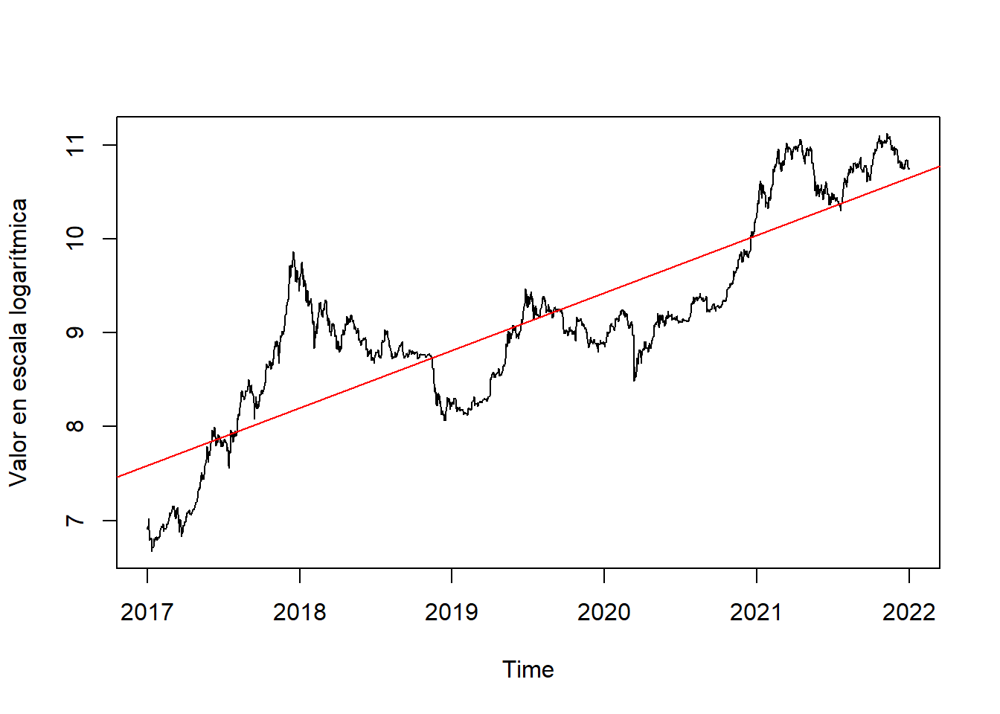
ahora eliminaremos la tendencia de la serie
###Eliminamos la tendencia con la predicción la rectaElimTenldata_ts <- ldata_ts -predict(fit)plot(ElimTenldata_ts, main="Serie Sin tendencia", ylab="Valor en escala logarítmica")
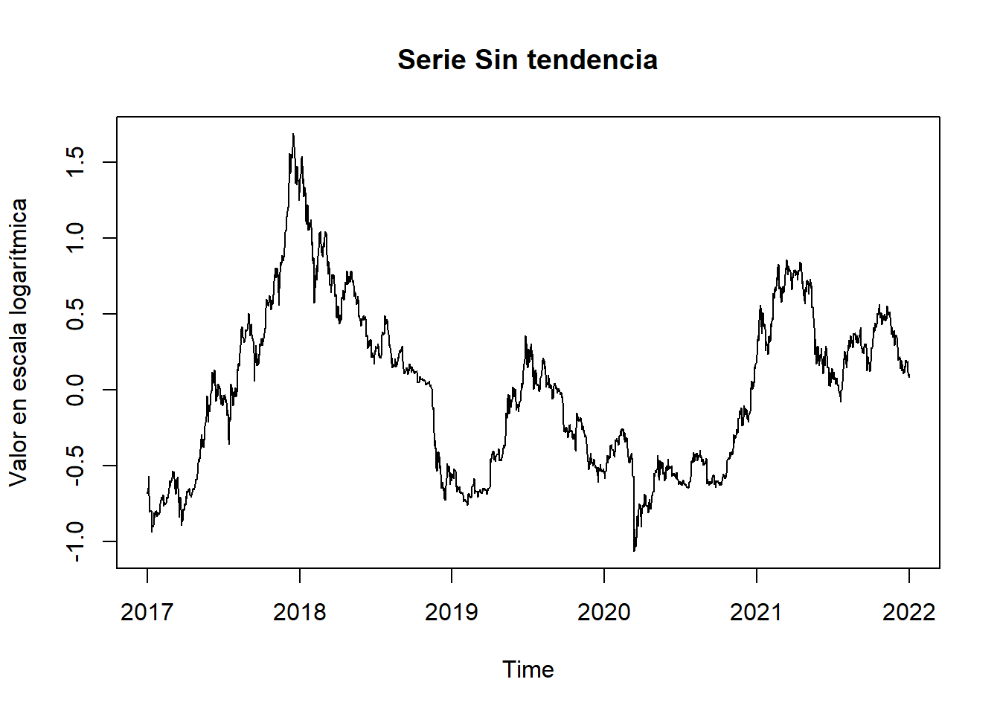
Observamos que en la serie obtenida después de eliminar la tendencia lineal parece tener un comportamiento de alta variabilidad similar una caminata aleatoria.
acf(ElimTenldata_ts,lag.max =length(ElimTenldata_ts), main="Serie Sin tendencia")
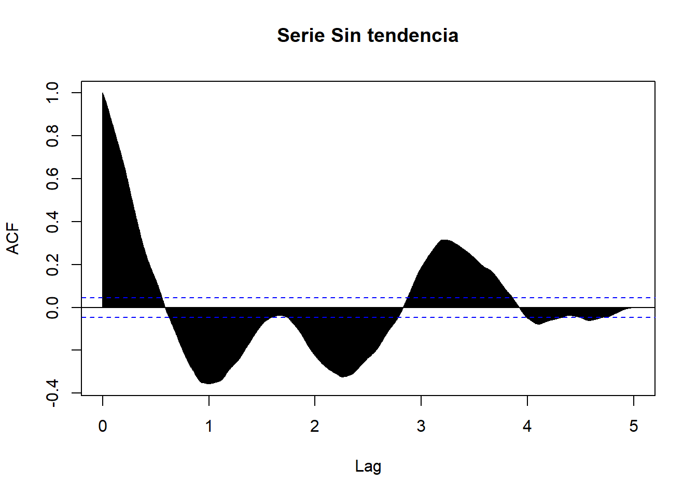
# Series trasnfromada sin tendencia Retardospar(mar =c(3,2,3,2))astsa::lag1.plot(ElimTenldata_ts, 16,corr=F)
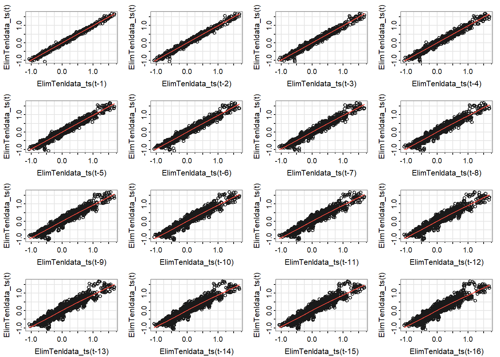
Notamos que en la gráfica del acf se sigue teniendo un decaimiento lento de los valores de la función de auto-correlación para los primeros rezagos, además en el gráfico de retardos se sigue manteniendo una alta relación lineal entre el valor actual y sus regazos. Por ende todo esto nos da los argumentos necesarios para descartarla estimación linealcómo una buena estimación de la tendencia.
1.0.3.2 Descomposición por promedio móviles
# descomposición de promedios movilesdescom_ldata <-decompose(ldata_ts)plot(descom_ldata)
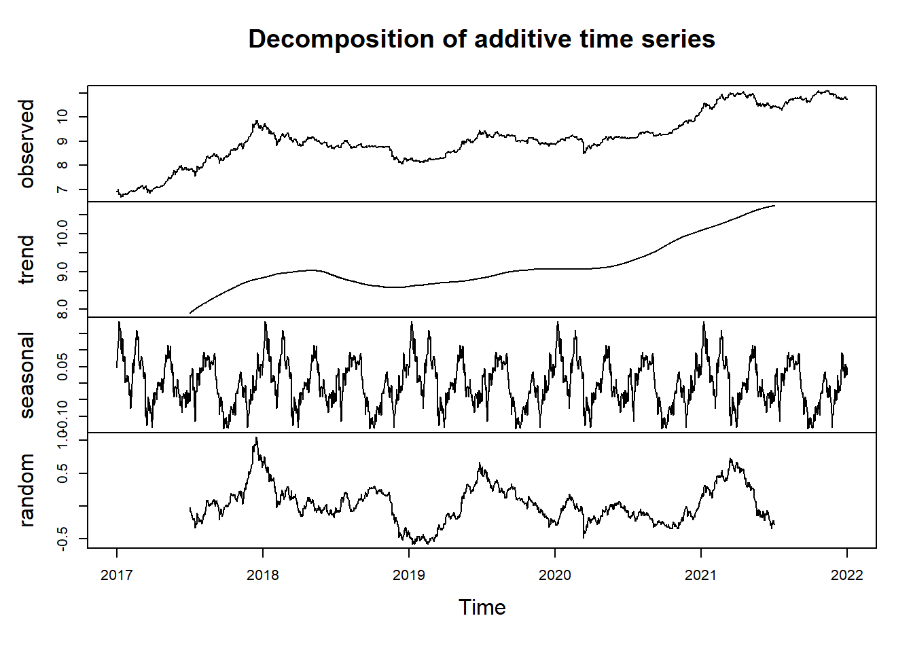
Podemos observar que usando un filtro de promedio móvil la tendencia estimada no se aproxima mucho a una lineal, cómo se puede apreciar en el siguiente gráfico; además la componente estacional no parece ser estimada de buena manera ya que no se ve un patrón de comportamiento claramente, además el residual presenta un comportamiento no estacionario aparentemente.
# Gráficoplot(ldata_ts, ylab="Valor en escala logarítmica")abline(fit,col ="red")# Se añade la recta ajustapoints(time(ldata_ts), descom_ldata$trend, col ="green", cex=0.3)
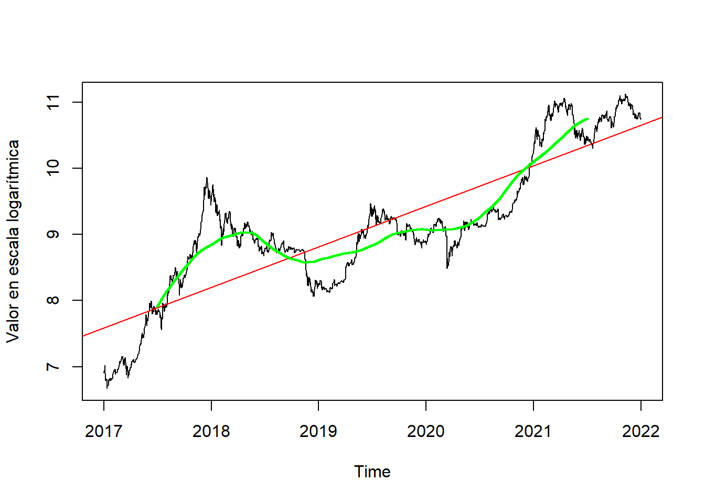
Eliminaremos la tendencia del promedio móvil centrado y de la frecuencia
###Eliminamos la tendencia con la predicción promedio movilElimTenldata_ts <- ldata_ts - descom_ldata$trendplot(ElimTenldata_ts, main="Serie Sin tendencia", ylab="Valor en escala logarítmica")
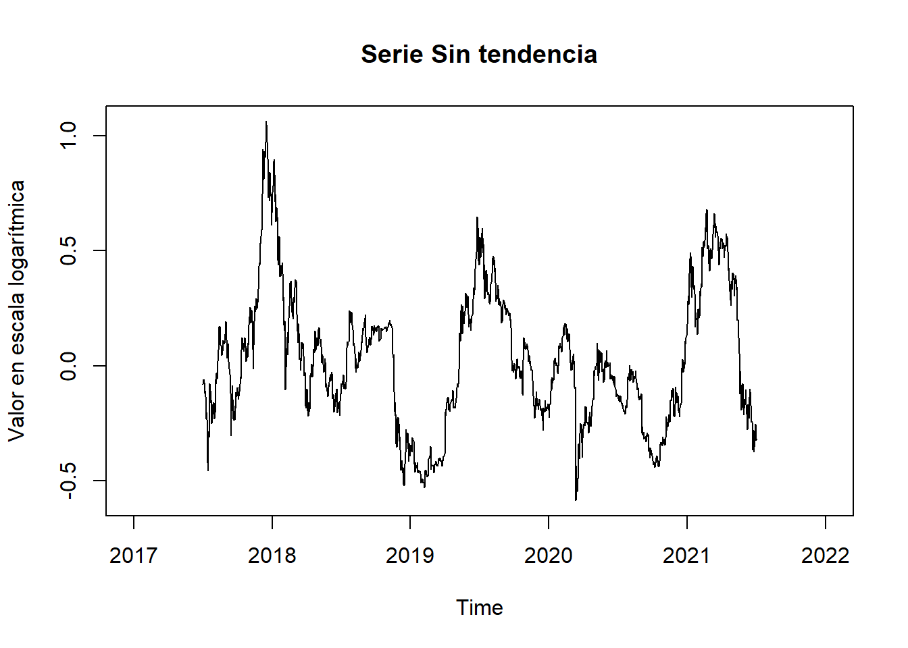
Podemos ver que la serie cómo en el caso lineal parece mostrar un comportamiento de caminata aleatoria.
acf(ElimTenldata_ts[183:1644],lag.max =730, main="Serie Sin tendencia")
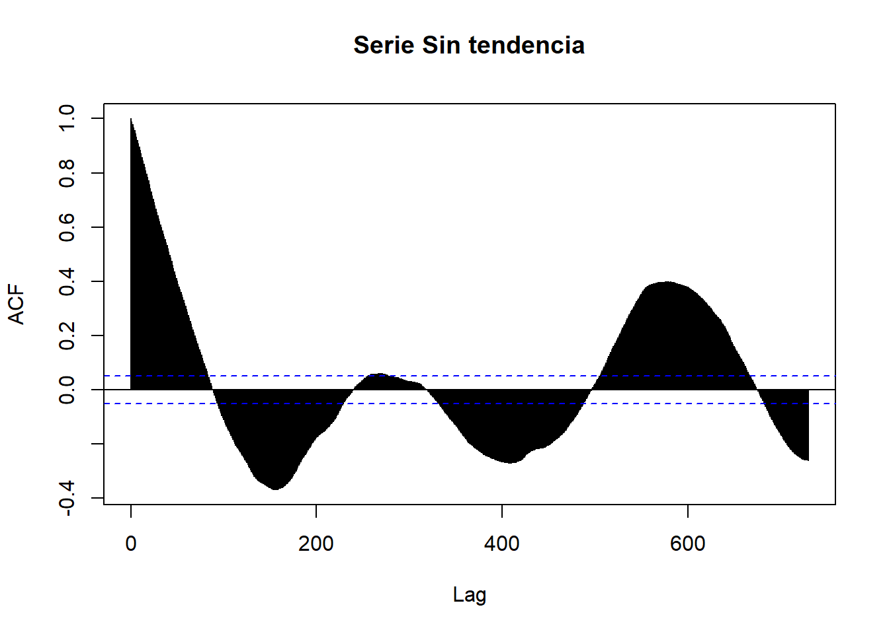
# Series trasnfromada sin tendencia Retardospar(mar =c(3,2,3,2))astsa::lag1.plot(ElimTenldata_ts[183:1644], 16,corr=F)
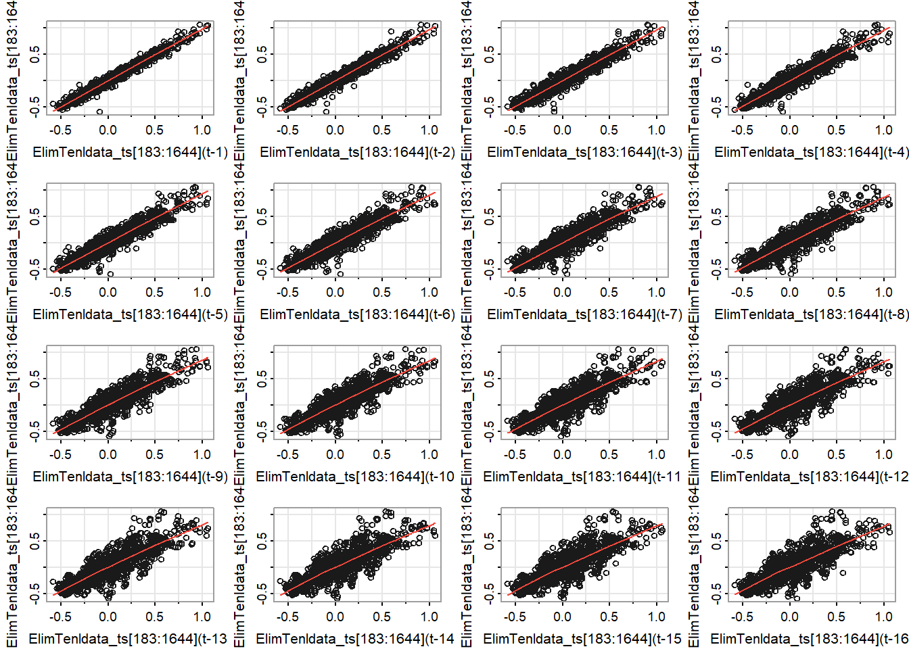
Notamos que tanto en el acf cómo en la gráfica de retardos se ve un comportamiento similar al anterior lo cuál nos hace descartar la descompsición de promedios moviles para la estimación de la tendencia.
Filtro promedio móvil con solo retrasos
Intentaremos ajustar un promedio móvil que tenga en cuenta solo los retrasos y sea de los periodos de un año, seis meses, tres meses y mes.
#gráficofilter_1=stats::filter(ldata_ts, filter =rep(1/365, 365), sides =1)filter_2=stats::filter(ldata_ts, filter =rep(1/182, 182), sides =1)filter_3=stats::filter(ldata_ts, filter =rep(1/90, 90), sides =1)filter_4=stats::filter(ldata_ts, filter =rep(1/30, 30), sides =1)plot(ldata_ts, ylab="Valor en escala logarítmica")points(time(ldata_ts), filter_1, col ="green", cex=0.33)points(time(ldata_ts), filter_2, col ="blue", cex=0.33)points(time(ldata_ts), filter_3, col ="red", cex=0.35)points(time(ldata_ts), filter_4, col ="cyan", cex=0.31)
Notamos que para 3 meses y 6 meses los filtros de promedios móviles muestra una mejor estimación, por ende tomaremos para 3 meses cómo estimación de la tendencia de la serie
###Eliminamos la tendencia con la predicción promedio movilElimTenldata_ts <- ldata_ts - filter_3plot(ElimTenldata_ts, main="Serie Sin tendencia", ylab="Valor en escala logarítmica")
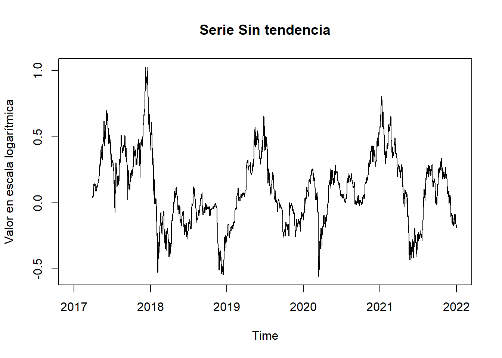
#acf(ElimTenldata_ts[90:1826],lag.max =1095, main="Serie Sin tendencia")
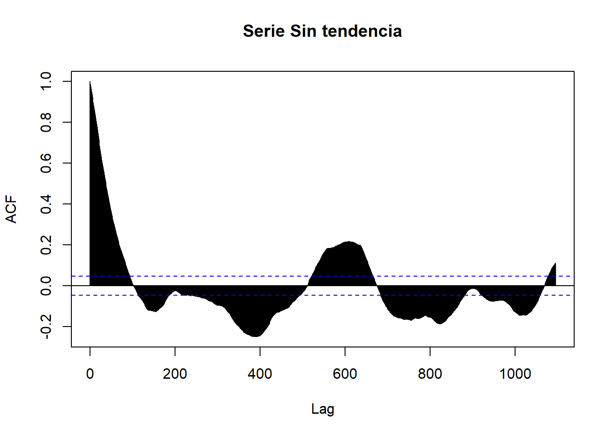
# Series trasnfromada sin tendencia Retardospar(mar =c(3,2,3,2))astsa::lag1.plot(ElimTenldata_ts[90:1826], 16,corr=F)
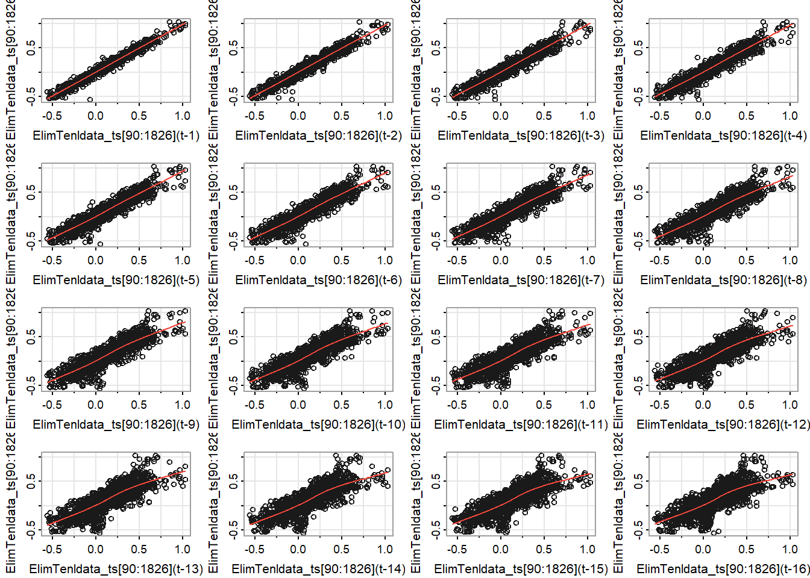
El comportamiento de los gráficos es similar a los anteriores con eso tenemos indicios de que la estimación de la tendencia de manera determinista potencialmente no es buena idea.
1.0.3.3 Descomposición STL
Usando la descomposición STL obtenemos la estimación de la tendencia
indice_ldata <-sort(Bitcoin$FechaTiempo)# as.Date(as.yearmon(tk_index(ldata_ts)))## Otra forma de extraer el indice estimetk::tk_index(lAirPass)logdata <-as.matrix(ldata_ts)df_ldata <-data.frame(Fecha=indice_ldata,logdata=as.matrix(ldata_ts))str(df_ldata)
'data.frame': 1826 obs. of 2 variables:
$ Fecha : Date, format: "2017-01-01" "2017-01-02" ...
$ Series.1: num 6.91 6.92 6.94 7.02 6.9 ...
'data.frame': 1826 obs. of 2 variables:
$ Fecha : Date, format: "2017-01-01" "2017-01-02" ...
$ logdata: num 6.91 6.92 6.94 7.02 6.9 ...
tibble_ldata <-tibble(df_ldata)####Primera aproximación del ajuste STLtibble_ldata%>%timetk::plot_time_series(Fecha, logdata, .interactive =TRUE,.plotly_slider =TRUE)
#####Ajuste STL#Note que obtenemos un objeto adicional en tibble_logpasajeros con Logpasa_ajus con parámetros que se pueden mover.logdata_ajus <-smooth_vec(logdata,span =0.75, degree =2)tibble_ldata%>%dplyr::mutate(logdata_ajus)
###Ajuste STL moviendo los parámetrostibble_ldata%>%mutate(logdata_ajus=smooth_vec(logdata,span =0.75, degree =2))%>%ggplot(aes(Fecha, logdata)) +geom_line() +geom_line(aes(y = logdata_ajus), color ="red")
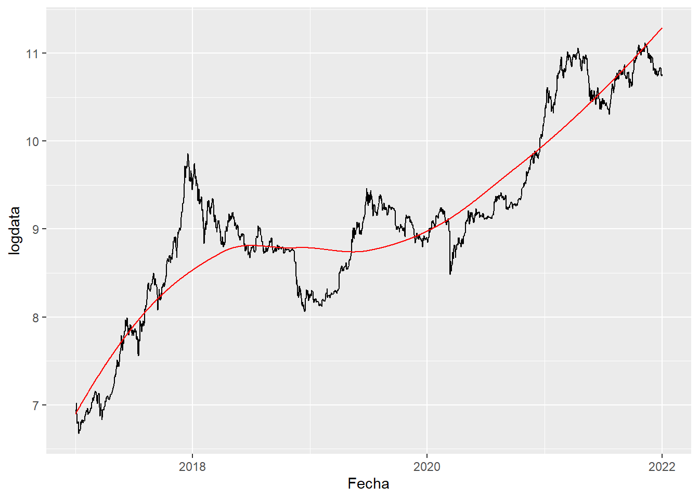
Se puede evidenciar que la Estimación de la tendencia via STL parece mejorar aspectos que la descomposición movil intentada con información de un año no se tenia.
###Eliminamos la tendencia con la predicción la STLElimTenldata_xts <- lData_xts - logdata_ajusplot(ElimTenldata_xts, main="Serie Sin tendencia", ylab="Valor en escala logarítmica")
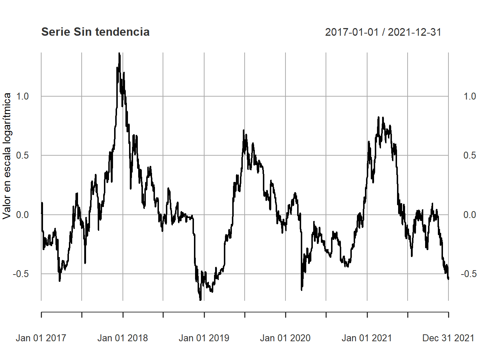
acf(ElimTenldata_xts,lag.max =1094, main="Serie Sin tendencia")
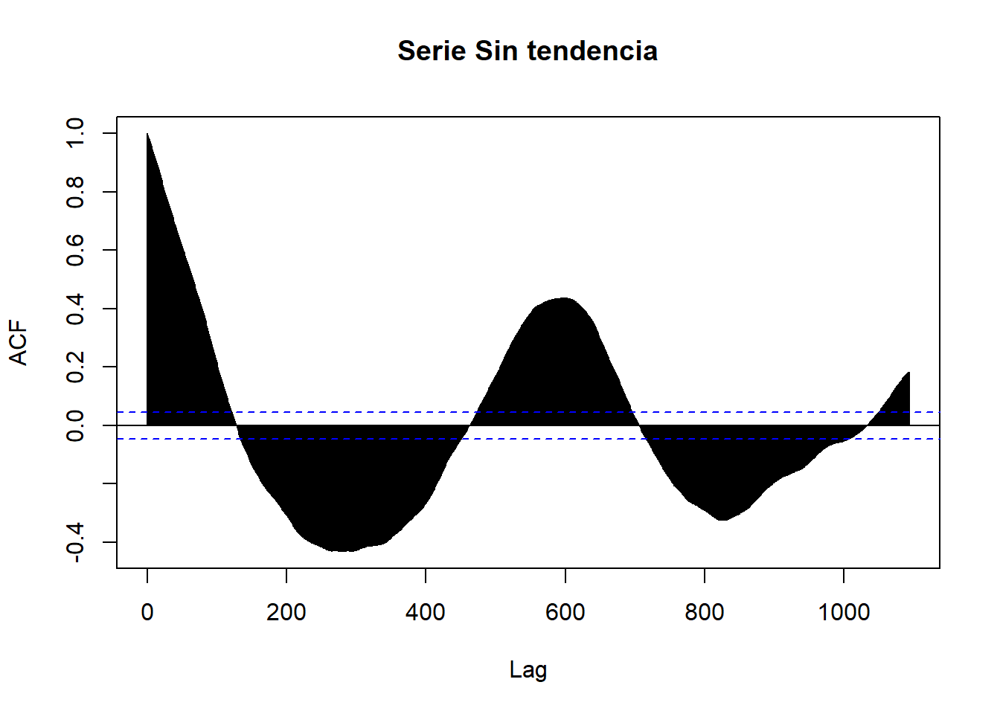
# Series trasnfromada sin tendencia Retardospar(mar =c(3,2,3,2))astsa::lag1.plot(ElimTenldata_xts, 16,corr=F)
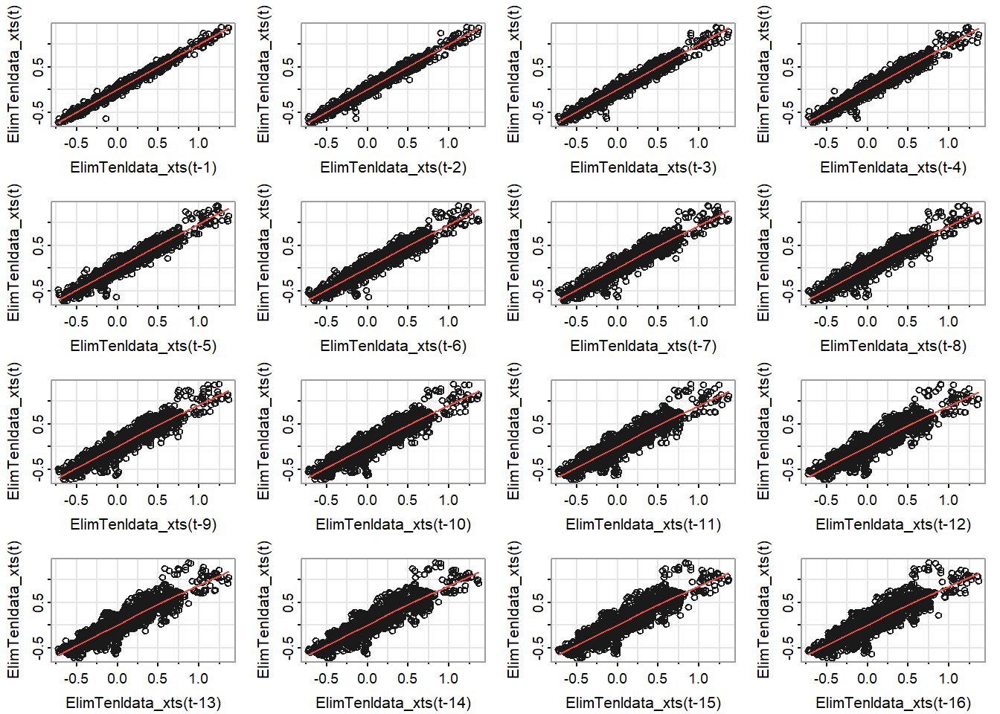
Vemos que a diferencia de los promedio móviles si tenemos una estimación para todos los valores de la serie, además notamos que la acf y el gráfico de retardos tiene un comportamiento similar a los métodos anteriores.
1.1 Serie Diferenciada
###Diferenciando con base en el objeto tsdldata<-diff(ldata_ts)#plot(dldata)#abline(h=0, col = "red")#acf(dldata,lag.max =90, main="Serie Diferenciada")
###Diferenciando con base en el objeto xtsdldata_xts<-diff(lData_xts)dldata_xts <- dldata_xts[-1]plot(dldata_xts, main ="Serie diferenciada")
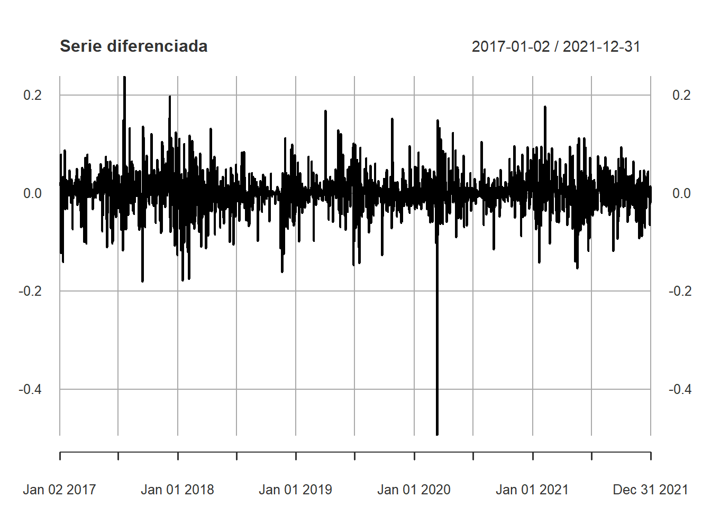
Vemos que la serie al ser diferenciada muestra un comportamiento estacionario pues los valores oscilan sobre un valor fijo, además de un valor que muestra un comportamiento extremo pues varia demasiado con respecto a los demás.
# función de autocorrelaciónacf(dldata_xts,lag.max =30, main="Serie Diferenciada")
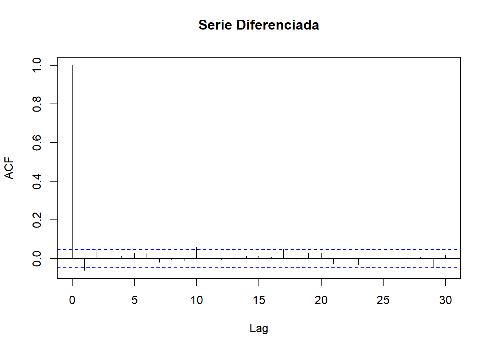
# Series trasnfromada sin tendencia Retardospar(mar =c(3,2,3,2))astsa::lag1.plot(dldata_xts, 16,corr=T)
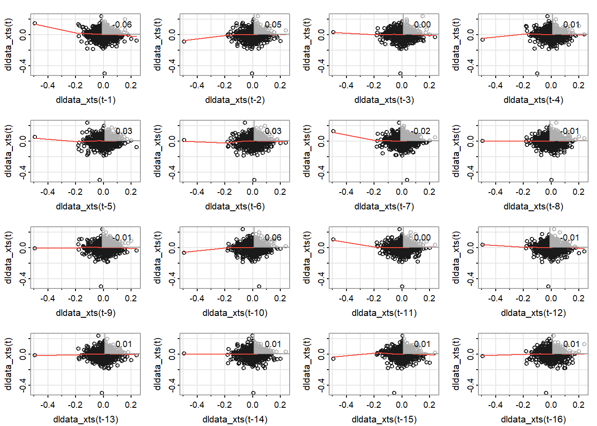
El gráfico de acf muestra que la tendencia parce a ver desparecido, además no parece destacar ningún valor para algún retraso de manera clara. Para el gráfico de retardos vemos claramente que ya no hay una relación lineal ni no lineal del valor actual con sus retardos.
Tomando en cuenta todo lo anterior trabajaremos con la serie aplicada la transformación de Box-Cox sugerida y diferenciada, además se tiene sospecha de que la serie presenta comportamiento de una camina aleatoria con tendencia no determinista.
1.2 Análisis de Estacionalidad
1.2.1 Mapas de calor
#Serie diferenciadaTSstudio::ts_heatmap(dldata_xts, title ="Mapa de calor - Cierre Bitcoin en bolsa dias año")
Para la serie diferenciada no se evidencia ninguno tipo de patrón lo cual nos da indicios de que no se tiene un componente estacional.
#ubicacionDif <-which.max(Periodograma$spec)sprintf("El valor de la frecuencia donde se máximiza el periodograma para la serie es: %s",Periodograma$freq[ubicacionDif])
[1] "El valor de la frecuencia donde se máximiza el periodograma para la serie es: 0.4016"
#sprintf("El periodo correspondiente es aproximadamente: %s",1/Periodograma$freq[ubicacionDif])
[1] "El periodo correspondiente es aproximadamente: 2.49003984063745"
Para la serie diferenciada el periodograma no es claro, a pesar del suviazamiento usado la curva sigue mostrando varios picos en su recorrido el máximo lo encontramos de tal manera que \(\omega = \frac{251}{625}=0.416\) lo cual se corresponde con un \(s \approx 2.5\) .
# intentando sacar el segundo más alton_dld <-length(Periodograma$spec)valor_seg <-sort(Periodograma$spec,partial=n_dld-1)[n_dld-1]ubica_segundo <-which(Periodograma$spec==valor_seg)sprintf("El valor de la frecuencia donde se alcanza el segundo máximo para el periodograma para REC es: %s",Periodograma$freq[ubica_segundo])
[1] "El valor de la frecuencia donde se alcanza el segundo máximo para el periodograma para REC es: 0.401066666666667"
#sprintf("El periodo correspondiente es aproximadamente: %s",1/Periodograma$freq[ubica_segundo])
[1] "El periodo correspondiente es aproximadamente: 2.49335106382979"
vemos que el segundo valor es bastante parecido al segundo.
# valor de frecuencia tail(sort(Periodograma$spec))
---title: "Descriptiva-josé"author: "Jose Valdes"lag: esformat: htmleditor_options: chunk_output_type: console---```{r}#| include: falselibrary(tidyverse)library(lubridate)library(timetk)library(tibble)library(zoo)library(fable)library(tsibble)library(feasts)```# Trabajo con la serie Bitcoin```{r}#datosBTC_Daily <-read.csv("datos/BTC-Daily.csv")Data <-data.frame(BTC_Daily$date,BTC_Daily$close)Data <-data.frame(BTC_Daily$date,BTC_Daily$close)colnames(Data) <-c("FechaTiempo", "Valor")# limpiando datos faltantesstr(Data)Data$FechaTiempo <-strftime(Data$FechaTiempo, format="%Y-%m-%d")str(Data)Data$FechaTiempo <-as.Date(Data$FechaTiempo)# procesamiento de los datosBitcoin <- Data %>%filter(FechaTiempo >=as.Date("2017-01-01"), FechaTiempo <=as.Date("2021-12-31"))str(Bitcoin)```### Probando xts```{r}# objeto serie de tiempoData_xts <- xts::xts(Bitcoin$Valor, order.by = Bitcoin$FechaTiempo)head(Data_xts)TSstudio::ts_info(Data_xts)#class(Data_xts)#frequency(Data_xts)#xts::periodicity(Data_xts)#xts::tclass(Data_xts)#plot(Data_xts)```Vista de los datos para inspección visual```{r}TSstudio::ts_plot(Data_xts,title ="Valor de cierre bitcoin en bolsa",Ytitle ="Valor en dolares",Xtitle ="Fecha",Xgrid =TRUE,Ygrid =TRUE)```- **Varianza marginal:** Se notan periodos donde el rango de valores que puede tomar la variable se va fluctuando a medida que pasa el tiempo.- **Componente Estacional:** No se evidencia un comportamiento cíclico en la serie.- **Tendencia:** Se muestra la serie **no** oscila sobre un valor fijo y tiene cambios abruptos de crecimiento y decrecimiento en algunos momentos.### Análisis de varianzaUsaremos la transformación de **Box-Cox** para estabilizar la varianza; primero miramos el lambda```{r}#Valor de lambdaforecast::BoxCox.lambda(Data_xts, method ="loglik", lower =-1, upper =3)MASS::boxcox(lm(Data_xts ~1),seq(-1/2, 1/2, length =50))```Vemos que se sugiere el valor $\lambda = 0$ lo cual dada de transformación de Box-Cox se usa la función logaritmo natural para la estabilización de la variabilidad así tenemos que:```{r}#trasnformaciónlData_xts <-log(Data_xts)#plot(lData_xts)``````{r}TSstudio::ts_plot(lData_xts,title ="Valor de Serie Trasnformada",Ytitle ="Valor de la trasnformación",Xtitle ="Fecha",Xgrid =TRUE,Ygrid =TRUE)```Ahora miramos si es necesario aplicar otra transformación a la serie```{r}#Valor de lambda(forecast::BoxCox.lambda(lData_xts, method ="loglik", lower =-1, upper =3))MASS::boxcox(lm(lData_xts ~1),seq(-1, 2, length =50))```Vemos que la sugerencia es $\lambda = 0.9$ lo cual es cercano a $1$, además el IC de confianza captura al $1$, por ende la transformación logarítmica parece haber estabilizado la varianza.```{r}#Gráfico de ellas juntaspar(mfrow=c(2,1))plot(Data_xts, main ="Series original")plot(lData_xts, main ="Series transformada")```Se puede ver cómo la transformación aplicada logra estabilizar la varianza en gran medida.### Análisis de tendenciaTrabajaremos con la serie a la cuál se le realizo la transformación para estabilizar la varianza, realizaremos el gráfico de los valores de la función de auto-correlación```{r}#ACfacf(lData_xts, 180, main ="Serie Bitcoin Trasnformada")```Notamos que los valores van teniendo un decaimiento leve lo cual nos da un indicio más claro de que existe tendencia en la serie, analizaremos el gráfico de retardos de la serie trasnformada para ver si podemos tener indicios de una relación *no-lineal o lineal* en la serie.```{r}#serie transformadapar(mar =c(3,2,3,2))astsa::lag1.plot(lData_xts, 16,corr=T)```Vemos que se nota un fuerte relación linea hasta para el retraso número 16, por lo tanto con lo mostrado por el *acf* y *el gráfico de retardos* tenemos indicios fuertes de tendencia en la serie así usaremos los métodos: *lineal determinista, Descomposición de* *promedios móviles y descomposición STL* para estimar dicha componente.#### Lineal deterministaajustaremos el modelo eliminaremos la tendencia y analizaremos los resultados```{r}#pasar a ts para Graficarloldata_ts <- TSstudio::xts_to_ts(lData_xts,frequency =365,start =as.Date("2017-01-01"))#modelo linealsummary(fit <-lm(ldata_ts~time(ldata_ts), na.action=NULL))# Gráficoplot(ldata_ts, ylab="Valor en escala logarítmica")abline(fit,col ="red")# Se añade la recta ajusta```ahora eliminaremos la tendencia de la serie```{r}###Eliminamos la tendencia con la predicción la rectaElimTenldata_ts <- ldata_ts -predict(fit)plot(ElimTenldata_ts, main="Serie Sin tendencia", ylab="Valor en escala logarítmica")```Observamos que en la serie obtenida después de eliminar la tendencia lineal parece tener un comportamiento de alta variabilidad similar una *caminata aleatoria.*```{r}acf(ElimTenldata_ts,lag.max =length(ElimTenldata_ts), main="Serie Sin tendencia")# Series trasnfromada sin tendencia Retardospar(mar =c(3,2,3,2))astsa::lag1.plot(ElimTenldata_ts, 16,corr=F)```Notamos que en la gráfica del **acf** se sigue teniendo un decaimiento lento de los valores de la función de auto-correlación para los primeros rezagos, además en el **gráfico de retardos** se sigue manteniendo una alta relación lineal entre el valor actual y sus regazos. Por ende todo esto nos da los argumentos necesarios para **descartar** *la estimación linealcómo una buena estimación de la tendencia.*#### Descomposición por promedio móviles```{r}# descomposición de promedios movilesdescom_ldata <-decompose(ldata_ts)plot(descom_ldata)```Podemos observar que usando **un filtro de promedio móvil** la tendencia estimada no se aproxima mucho a una lineal, cómo se puede apreciar en el siguiente gráfico; además la componente estacional no parece ser estimada de buena manera ya que no se ve un patrón de comportamiento claramente, además el residual presenta un comportamiento no estacionario aparentemente.```{r}# Gráficoplot(ldata_ts, ylab="Valor en escala logarítmica")abline(fit,col ="red")# Se añade la recta ajustapoints(time(ldata_ts), descom_ldata$trend, col ="green", cex=0.3)```Eliminaremos la tendencia del promedio móvil centrado y de la frecuencia```{r}###Eliminamos la tendencia con la predicción promedio movilElimTenldata_ts <- ldata_ts - descom_ldata$trendplot(ElimTenldata_ts, main="Serie Sin tendencia", ylab="Valor en escala logarítmica")```Podemos ver que la serie cómo en el caso *lineal* parece mostrar un comportamiento de *caminata aleatoria*.```{r}acf(ElimTenldata_ts[183:1644],lag.max =730, main="Serie Sin tendencia")# Series trasnfromada sin tendencia Retardospar(mar =c(3,2,3,2))astsa::lag1.plot(ElimTenldata_ts[183:1644], 16,corr=F)```Notamos que tanto en el **acf** cómo en **la gráfica de retardos** se ve un comportamiento similar al anterior lo cuál nos hace descartar *la descompsición de promedios moviles* para la estimación de la tendencia.***Filtro promedio móvil con solo retrasos***Intentaremos ajustar un promedio móvil que tenga en cuenta solo los retrasos y sea de los periodos de un año, seis meses, tres meses y mes.```{r}#gráficofilter_1=stats::filter(ldata_ts, filter =rep(1/365, 365), sides =1)filter_2=stats::filter(ldata_ts, filter =rep(1/182, 182), sides =1)filter_3=stats::filter(ldata_ts, filter =rep(1/90, 90), sides =1)filter_4=stats::filter(ldata_ts, filter =rep(1/30, 30), sides =1)plot(ldata_ts, ylab="Valor en escala logarítmica")points(time(ldata_ts), filter_1, col ="green", cex=0.33)points(time(ldata_ts), filter_2, col ="blue", cex=0.33)points(time(ldata_ts), filter_3, col ="red", cex=0.35)points(time(ldata_ts), filter_4, col ="cyan", cex=0.31)#legend(locator(1), c("365 días","182 días","90 días","30 días"), col=c("green","blue","red","cyan"),lty=c(1,1,1,1),lwd=c(2,2,2,2))```Notamos que para *3 meses* y *6 meses* los filtros de promedios móviles muestra una mejor estimación, por ende tomaremos para *3 meses* cómo estimación de la tendencia de la serie```{r}###Eliminamos la tendencia con la predicción promedio movilElimTenldata_ts <- ldata_ts - filter_3plot(ElimTenldata_ts, main="Serie Sin tendencia", ylab="Valor en escala logarítmica")#acf(ElimTenldata_ts[90:1826],lag.max =1095, main="Serie Sin tendencia")# Series trasnfromada sin tendencia Retardospar(mar =c(3,2,3,2))astsa::lag1.plot(ElimTenldata_ts[90:1826], 16,corr=F)```El comportamiento de los gráficos es similar a los anteriores con eso tenemos indicios de que la estimación de la tendencia de manera determinista potencialmente no es buena idea.#### Descomposición STLUsando la descomposición **STL** obtenemos la estimación de la tendencia```{r}indice_ldata <-sort(Bitcoin$FechaTiempo)# as.Date(as.yearmon(tk_index(ldata_ts)))## Otra forma de extraer el indice estimetk::tk_index(lAirPass)logdata <-as.matrix(ldata_ts)df_ldata <-data.frame(Fecha=indice_ldata,logdata=as.matrix(ldata_ts))str(df_ldata)colnames(df_ldata) <-c("Fecha", "logdata")str(df_ldata)tibble_ldata <-tibble(df_ldata)####Primera aproximación del ajuste STLtibble_ldata%>%timetk::plot_time_series(Fecha, logdata, .interactive =TRUE,.plotly_slider =TRUE)``````{r}#####Ajuste STL#Note que obtenemos un objeto adicional en tibble_logpasajeros con Logpasa_ajus con parámetros que se pueden mover.logdata_ajus <-smooth_vec(logdata,span =0.75, degree =2)tibble_ldata%>%dplyr::mutate(logdata_ajus)###Ajuste STL moviendo los parámetrostibble_ldata%>%mutate(logdata_ajus=smooth_vec(logdata,span =0.75, degree =2))%>%ggplot(aes(Fecha, logdata)) +geom_line() +geom_line(aes(y = logdata_ajus), color ="red")```Se puede evidenciar que la Estimación de la tendencia via *STL* parece mejorar aspectos que la *descomposición movil* intentada con información de un año no se tenia.```{r}###Eliminamos la tendencia con la predicción la STLElimTenldata_xts <- lData_xts - logdata_ajusplot(ElimTenldata_xts, main="Serie Sin tendencia", ylab="Valor en escala logarítmica")acf(ElimTenldata_xts,lag.max =1094, main="Serie Sin tendencia")# Series trasnfromada sin tendencia Retardospar(mar =c(3,2,3,2))astsa::lag1.plot(ElimTenldata_xts, 16,corr=F)```Vemos que a diferencia de los promedio móviles si tenemos una estimación para todos los valores de la serie, además notamos que la **acf** y **el gráfico de retardos** tiene un comportamiento similar a los métodos anteriores.## Serie Diferenciada```{r}###Diferenciando con base en el objeto tsdldata<-diff(ldata_ts)#plot(dldata)#abline(h=0, col = "red")#acf(dldata,lag.max =90, main="Serie Diferenciada")``````{r}###Diferenciando con base en el objeto xtsdldata_xts<-diff(lData_xts)dldata_xts <- dldata_xts[-1]plot(dldata_xts, main ="Serie diferenciada")```Vemos que la serie al ser diferenciada muestra un comportamiento estacionario pues los valores oscilan sobre un valor fijo, además de un valor que muestra un comportamiento extremo pues varia demasiado con respecto a los demás.```{r}# función de autocorrelaciónacf(dldata_xts,lag.max =30, main="Serie Diferenciada")# Series trasnfromada sin tendencia Retardospar(mar =c(3,2,3,2))astsa::lag1.plot(dldata_xts, 16,corr=T)```El gráfico de **acf** muestra que la tendencia parce a ver desparecido, además no parece destacar ningún valor para algún retraso de manera clara. Para el **gráfico de retardos** vemos claramente que ya no hay una relación lineal ni no lineal del valor actual con sus retardos.Tomando en cuenta todo lo anterior trabajaremos con la serie aplicada la transformación de Box-Cox sugerida y diferenciada, además se tiene sospecha de que la serie presenta comportamiento de una camina aleatoria con tendencia no determinista.## Análisis de Estacionalidad### Mapas de calor```{r}#Serie diferenciadaTSstudio::ts_heatmap(dldata_xts, title ="Mapa de calor - Cierre Bitcoin en bolsa dias año")```Para la serie diferenciada no se evidencia ninguno tipo de patrón lo cual nos da indicios de que no se tiene un componente estacional.### Periodograma```{r}# periodogramaPeriodograma <-spectrum(as.numeric(dldata_xts),log="no",span=c(5,5))#ubicacionDif <-which.max(Periodograma$spec)sprintf("El valor de la frecuencia donde se máximiza el periodograma para la serie es: %s",Periodograma$freq[ubicacionDif])#sprintf("El periodo correspondiente es aproximadamente: %s",1/Periodograma$freq[ubicacionDif])```Para la serie diferenciada el periodograma no es claro, a pesar del suviazamiento usado la curva sigue mostrando varios picos en su recorrido el máximo lo encontramos de tal manera que $\omega = \frac{251}{625}=0.416$ lo cual se corresponde con un $s \approx 2.5$ .```{r}# intentando sacar el segundo más alton_dld <-length(Periodograma$spec)valor_seg <-sort(Periodograma$spec,partial=n_dld-1)[n_dld-1]ubica_segundo <-which(Periodograma$spec==valor_seg)sprintf("El valor de la frecuencia donde se alcanza el segundo máximo para el periodograma para REC es: %s",Periodograma$freq[ubica_segundo])#sprintf("El periodo correspondiente es aproximadamente: %s",1/Periodograma$freq[ubica_segundo])```vemos que el segundo valor es bastante parecido al segundo.```{r}# valor de frecuencia tail(sort(Periodograma$spec))```Cómo se puede observar los primeros seis valores son bastante cercanos entre ellos, por lo tanto sus valores de periodo serán similiares.Con esto **descartamos** la estimación de una componente estacional pues no tenemos evidencia clara de su existencia.